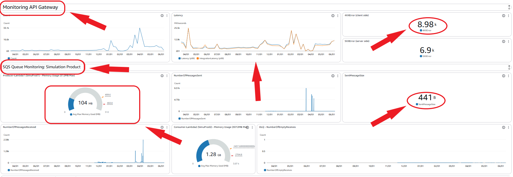

Cloud / DevOps
Architecture d Observabilite AWS
Conception d'une couche d'observabilite AWS pour rendre une application plus lisible en exploitation: dashboards, alarmes, notifications et stack deployable par Infrastructure as Code.
.PNG)
.PNG)

Contexte
L'application manquait de visibilite operationnelle: les incidents etaient detectes trop tard, le diagnostic demandait beaucoup de verification manuelle et les equipes ne disposaient pas d'une vue claire sur les composants critiques.
L'objectif etait de passer d'une supervision reactive a une observabilite exploitable: comprendre rapidement l'etat du systeme, detecter les signaux faibles et standardiser le monitoring pour les futurs services.
Architecture d'observabilite
- Creation d une stack CDK reutilisable pour dashboards, alarmes et widgets.
- Pattern event-driven: CloudWatch Alarm vers SNS puis canaux de notification.
- Automatisation complete des deploiements et parametrages de supervision.
- Standardisation des seuils et conventions de nommage pour operations.
Approche operationnelle
- Identification des metriques critiques: erreurs, latence, disponibilite, saturation et executions anormales.
- Organisation des dashboards pour permettre une lecture rapide par composant et par niveau de criticite.
- Definition d'alarmes actionnables afin d'eviter le bruit et de prioriser les alertes utiles.
- Versionnement de la configuration de monitoring pour eviter les reglages manuels non tracables.
Resultats
Visibilite operationnelle
Les composants critiques deviennent observables via des dashboards lisibles et centralises.
Alerte proactive
Les anomalies peuvent etre detectees plus tot et routees vers les bons canaux de notification.
Monitoring reproductible
La stack CDK permet de redeployer la supervision sans duplication manuelle.